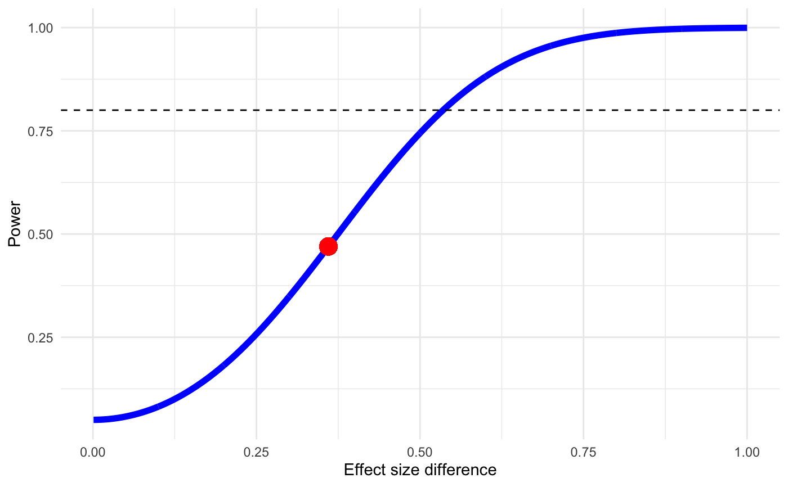
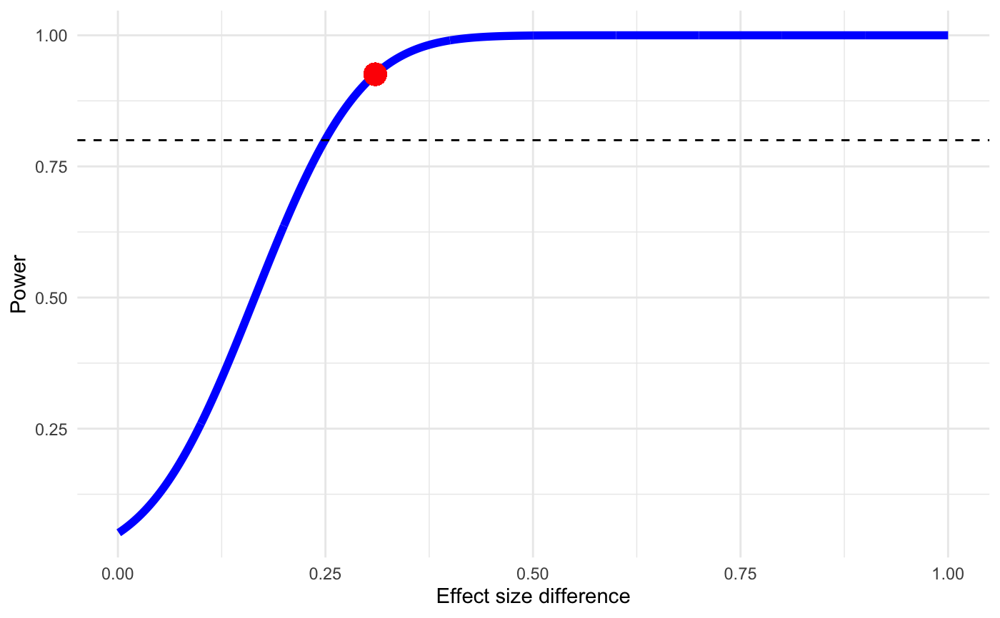

A priori power calculator for subgroup contrasts
power.analysis.subgroup.RdThis function performs an a priori power estimation for a test for subgroup differences within a meta-analysis.
Arguments
- TE1
Pooled effect size (e.g., standardized mean difference, Hedges' \(g\), log-Odds Ratio or other linear continuous effect size) of the first subgroup of studies.
- TE2
Pooled effect size (e.g., standardized mean difference, Hedges' \(g\), log-Odds Ratio or other linear continuous effect size) of the second subgroup of studies.
- seTE1
Pooled standard error of the first subgroup of studies. Either
seTE1/seTE2,sd1/sd2, orvar1/var2must be provided.- seTE2
Pooled standard error of the second subgroup of studies. Either
seTE1/seTE2,sd1/sd2, orvar1/var2must be provided.- sd1
Pooled standard deviation of the first subgroup of studies. Either
seTE1/seTE2,sd1/sd2, orvar1/var2must be provided.- sd2
Pooled standard deviation of the second subgroup of studies. Either
seTE1/seTE2,sd1/sd2, orvar1/var2must be provided.- var1
Pooled variance of the first subgroup of studies. Either
seTE1/seTE2,sd1/sd2, orvar1/var2must be provided.- var2
Pooled variance of the second subgroup of studies. Either
seTE1/seTE2,sd1/sd2, orvar1/var2must be provided.- two.tailed
Logical. Should a two-tailed (
TRUE) or one-tailed (FALSE) test (\(\alpha = 0.05\)) be assumed? Default isTRUE.
Value
Returns a list with five elements:
Power: The estimated power of the subgroup contrast, expressed as a value between 0 and 1 (i.e., 0%-100%).Plot: A plot showing the effect size difference (x), power (y), estimated power (red point) and estimated power for changing effect size differences (blue line). A dashed line at 80% power is also provided as a visual threshold for sufficient power.Data: Adata.framecontaining the data used to generate the plot inPlot.Test: The type of test used for the power calculations ("one.tailed"or"two.tailed").Gamma: The analyzed effect size difference calculated from the inputs.
Details
This function provides an estimate of the power \(1-\beta\) of a subgroup contrast analysis provided the assumed effect sizes in each subgroup and their dispersion measures. The function implements the formulae described by Hedges and Pigott (2001).
References
Hedges, L. V., & Pigott, T. D. (2001). The power of statistical tests in meta-analysis. Psychological methods, 6(3), 203.
Examples
# Example 1: using standard error and two-tailed test
power.analysis.subgroup(TE1=0.30, TE2=0.66, seTE1=0.13, seTE2=0.14)
#> Minimum effect size difference needed for sufficient power: 0.536 (input: 0.36)
#> Power for subgroup difference test (two-tailed): 46.99%

# Example 2: using variance and one-tailed test
pasg = power.analysis.subgroup(TE1=-0.91, TE2=-1.22, var1 = 0.0023, var2 = 0.0078,
two.tailed = FALSE)
summary(pasg)
#> Minimum effect size difference needed for sufficient power: 0.25 (input: 0.31)
#> Power for subgroup difference test (one-tailed): 92.5%
# Only show plot
plot(pasg)
